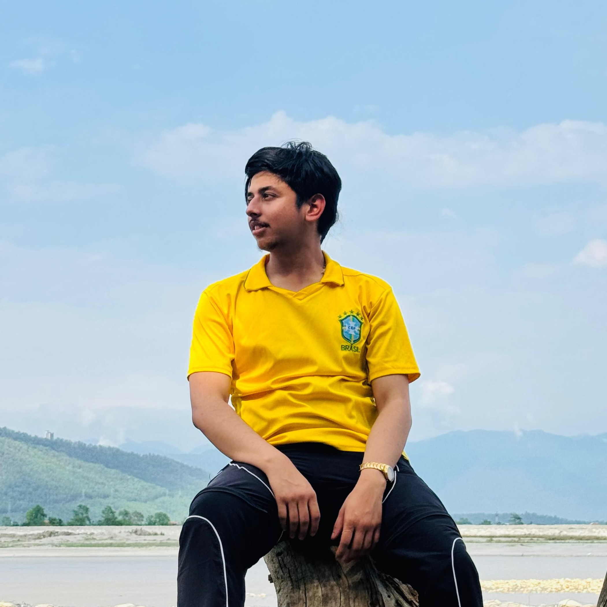

I split my time between running a company, helping build another from the ground floor, and studying Computer Science. Each one teaches me something the others can't.

Started from scratch and built as its own — Krix Nova is where I set the direction, make the calls, and carry the responsibility of turning an idea into something real.
Part of the original team that got Inovex off the ground — shaping how it works before there was a playbook to follow, alongside people I trust.
I completed my +2 in Computer Science and, alongside my studies, took the leap into founding and co-building companies — because I'd rather learn by doing than wait for the theory to catch up.
Running Krix Nova and helping shape Inovex from its early days has taught me more about problem-solving under pressure than any classroom could. I'm now pursuing higher education in Information Technology to sharpen the technical foundation behind that experience.
I believe the best builders are also good communicators — which is why I've stayed active in academic competitions, event leadership, and community work alongside the company work.
Wrote programs in C and built web interfaces with HTML & CSS during my academic studies — the first place I learned that clean logic beats clever tricks.
Hosted school events, competed in academic quizzes, and took on leadership roles — the same instincts I now lean on running a company.
Stayed involved in social work and community activities, because technology only matters when it's actually built for the people using it.
Whether it's a project, a partnership, or an opportunity to work together — I'd love to hear from you.